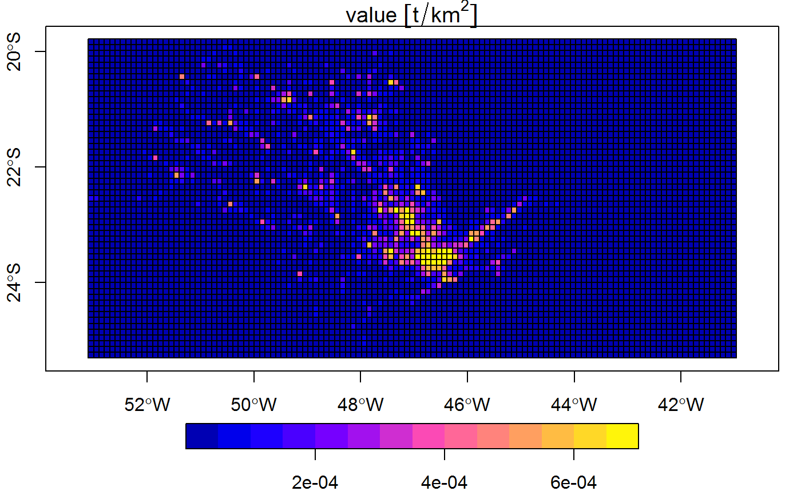
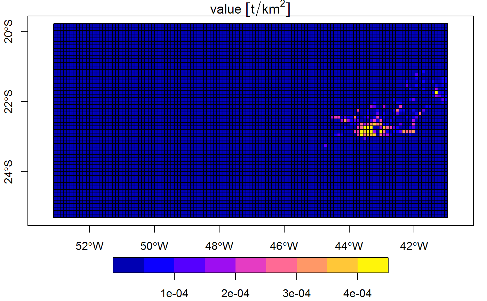
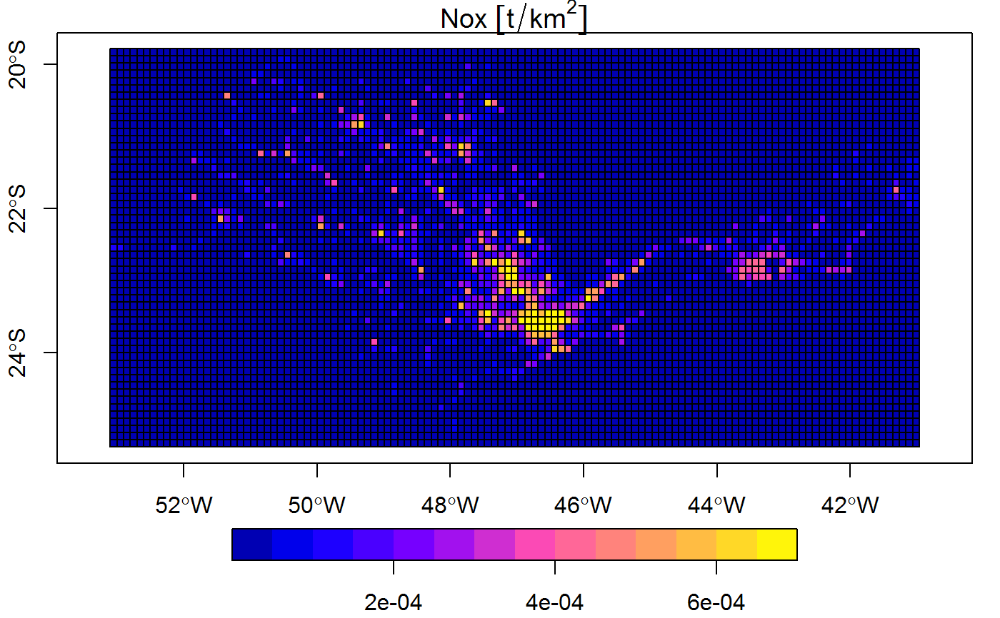

possess.Rdextract values from a image to be used on each region
possess(geoemiss, filename = NA, plots = T, verbose = T)
| geoemiss | an output from geoemiss |
|---|---|
| filename | image filename |
| plots | plot individual regions |
| verbose | display additional information |
states <- sf::st_read(paste(system.file("extdata", package = "inventory"),"/states.shp",sep=""), quiet = TRUE) Nox <- geoemiss(geom = states,variable = "Nox",names = c("sp","rj"),values = c(1000,20))#> calculating Nox for 2 areasimage <- paste(system.file("extdata", package = "inventory"),"/tiny.tif",sep="") ras <- possess(Nox,image,plots = FALSE) test <- griding(ras,variable = "Nox", res = 0.1, type = "local", plot = TRUE)#> processing sp area ...#>#>#> processing rj area ...#>#>